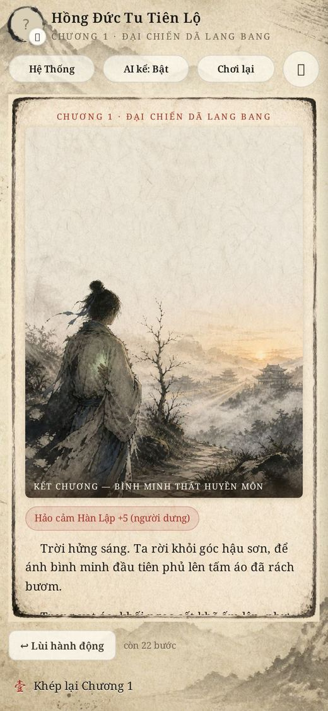
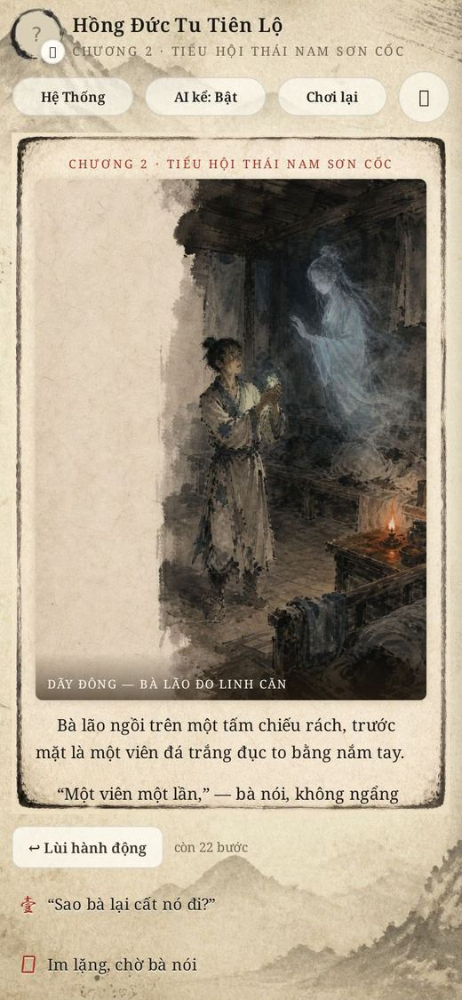
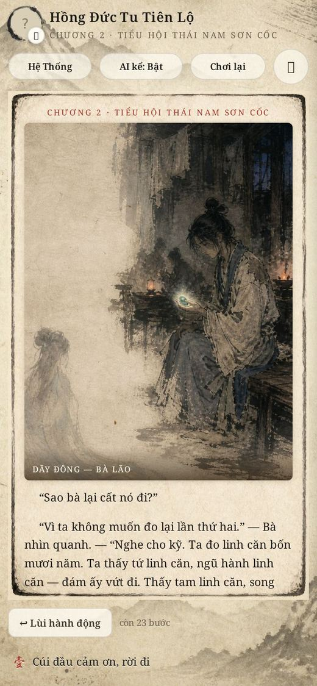
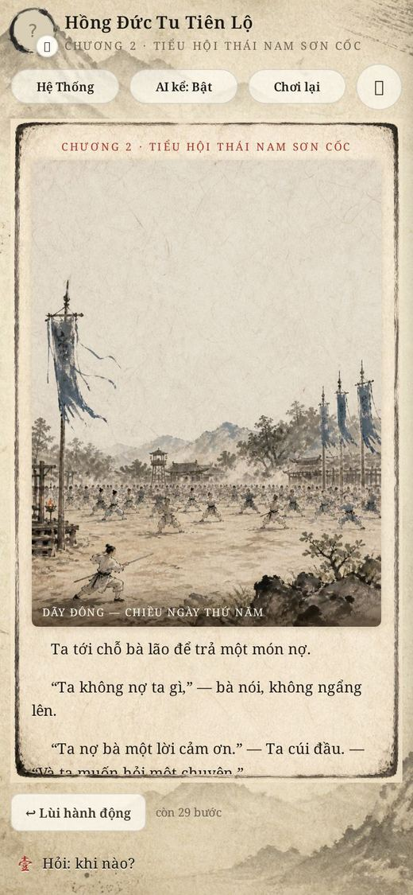
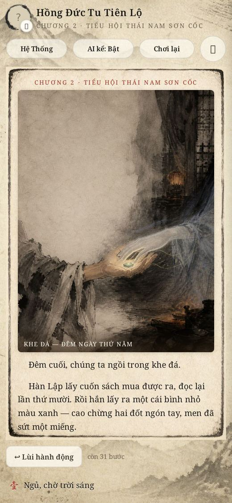
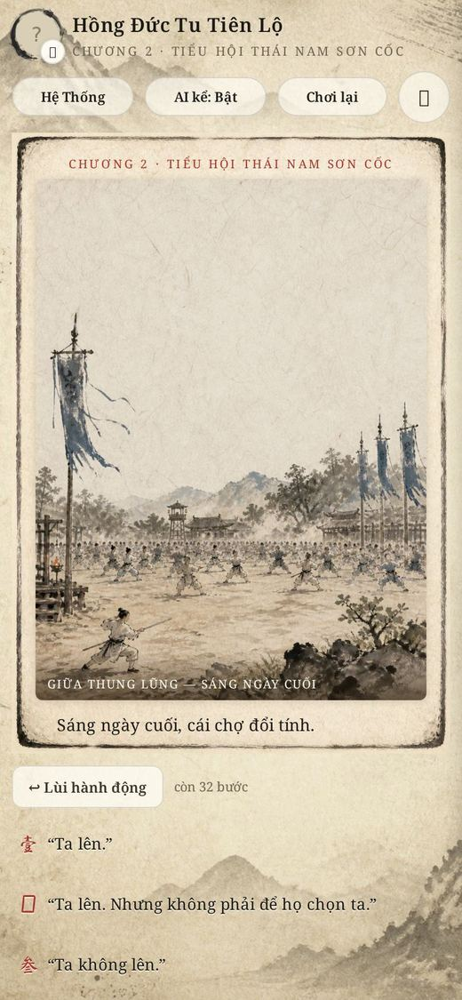
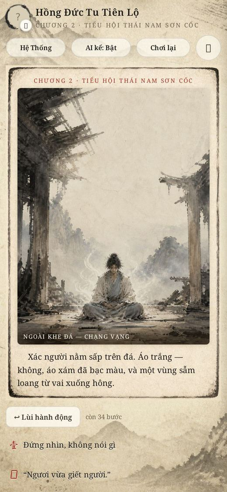
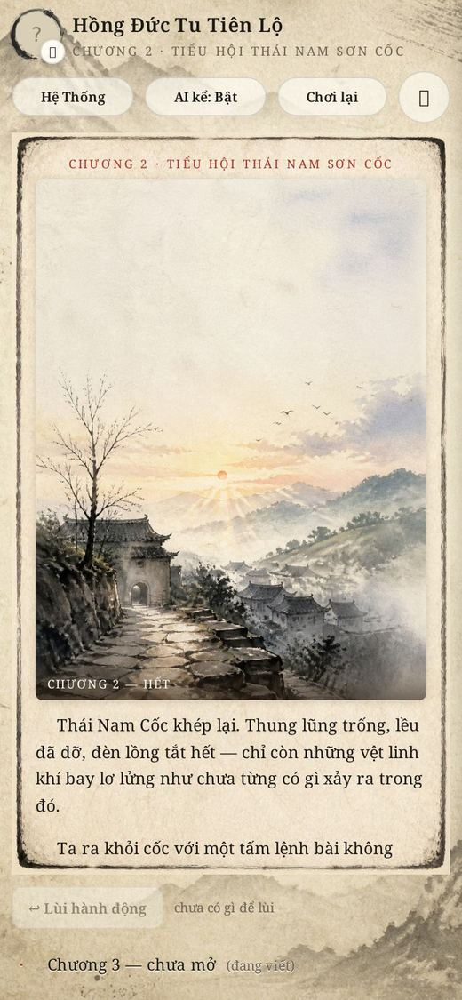

Cuối Chương 1 — cổng đông, sau trận
Chụp lại từ bản đang chạy trên mạng, sau khi đồng bộ dữ liệu.
Báo cáo · 17/11 · đọc trên điện thoại
Bản cũ: ba tông môn dựng một cái đài giữa thung lũng, người chơi lên đài, có kiếm gỗ để đo linh căn, qua thì được nhận.
Bản mới: hội chợ. Tán tu và đệ tử tiểu gia tộc tới đổi linh thạch lấy đan dược, pháp khí, sách công pháp. Không ai tuyển ai. Cao trào là tà tu phong toả cốc ngày cuối — có chết chóc, có cướp bóc, có người bị bắt làm lô đỉnh.
Bản cũ viết Hàn Lập: “Thuỷ linh căn. Tạp. Yếu. Nhưng có.” Sai. Theo đúng luật anh dạy:
Càng ít loại càng quý. Nên “thuỷ linh căn” một loại không thể là “tạp”. Nay Hàn Lập là tứ linh căn — đúng nguyên tác, hắn vào tạp dịch. Người chơi là thiên linh căn — một loại duy nhất.
Mạc Đại Phu để lại một tấm Thăng Tiên Lệnh trong túi di vật, cùng cuốn sách và mảnh ngọc. Hàn Lập biết nó là gì, và biết mình không có linh căn tốt để đi đường khác.
Người chơi không có lệnh. Chỉ Hàn Lập có. Đúng như anh chốt.
Hàn Lập lấy ra cái bình nhỏ màu xanh, nhặt trong đám đổ nát sau trận. Hắn kể đã thử đựng nước, thử chôn, thử đặt cạnh cây thuốc. Không nói nó là gì. Chỉ để người chơi thấy hắn có nó, và thấy hắn giấu nó.
Cuối Chương 1, ông trúng một chưởng của Dã Lang Bang, hấp hối ở cổng đông, Hàn Lập quỳ bên cạnh. Chương 2 mở đầu bằng việc Hàn Lập mang di vật về nhà — khớp nhau.
Trước đây hai chương đá nhau: Chương 1 viết ông “vẫn lặng lẽ cứu người”, Chương 2 nói ông đã mất từ đêm trước.

Cuối Chương 1 — cổng đông, sau trận
Chụp lại từ bản đang chạy trên mạng, sau khi đồng bộ dữ liệu.
Bản cũ: “gã thanh niên áo vải xanh, mặt mũi sáng sủa, cười rất tươi, kéo ghế sang”. Sai. Nay là tán tu lớn tuổi, Luyện Khí tầng tám, kiêu ngạo, thực dụng, nói chuyện như giảng bài, không giả vờ tử tế.
Chụp trên iPhone 390×844, bản chạy thật.

Đo linh căn — bà lão đọc kết quả
Nay: Hàn Lập là tứ linh căn — tạp dịch. Người chơi là thiên linh căn, một loại duy nhất.
Trước: Bản cũ ghi Hàn Lập “Thuỷ linh căn. Tạp. Yếu. Nhưng có.” — sai canon. Một loại linh căn là thiên linh căn, thứ quý nhất, không phải “tạp”. Nay Hàn Lập bốn loại, người chơi một loại.

Bà lão giải thích bảng xếp loại
Nay: Bà nói rõ thứ tự: tứ/ngũ hành là vứt đi, tam là ngoại môn, song là nội môn, một loại là chân truyền.
Trước: Trước đây bà chỉ nói mơ hồ “nên giấu”. Nay bảng xếp hạng được nói thẳng, đúng luật anh dạy.

Hai đường vào tông môn
Nay: Bà lão giảng đường thứ hai: Thăng Tiên Lệnh — khỏi đo, khỏi khảo hạch, vào thẳng ngoại môn, thưởng một viên Trúc Cơ Đan.
Trước: Đây là kiến thức mới thêm vào chương. Bản cũ không có Thăng Tiên Lệnh, chỉ có “lên đài cho ba tông môn thử”.

Gieo mầm Chưởng Thiên Bình
Nay: Hàn Lập lấy ra cái bình nhỏ màu xanh nhặt sau trận. Hắn thử đựng nước, thử chôn, thử đặt cạnh cây thuốc. Không hiểu nó là gì.
Trước: Chỉ gieo mầm, không giải thích công dụng — đúng ý anh. Người chơi thấy Hàn Lập có nó, và thấy hắn giấu nó.

Cao trào — tà tu phong toả
Nay: Ngày cuối, tà tu tràn xuống Thái Nam Cốc. Tiếng hú ba phía, người ta chạy, bóng áo đen lướt theo vách đá.
Trước: Bản cũ: ba tông môn dựng đài tuyển đệ tử, người chơi lên đài thi. Sai hoàn toàn. Nguyên tác không có tuyển đệ tử ở Thái Nam.

Hàn Lập hạ sát Kim Quang Thượng Nhân
Nay: Hắn giết người lần đầu. Đoạt túi trữ vật: thêm một Thăng Tiên Lệnh và thanh Kim Quang Chuyên.
Trước: Đây là mốc canon quan trọng — lần đầu Hàn Lập giết người trong giới tu tiên. Bản cũ không có gì cả, chỉ có “qua hội tuyển”.

Nhánh người chơi giữ Hàn Lập lại
Nay: Nếu người chơi nắm tay áo giữ hắn, Hàn Lập đưa lệnh của mình cho người chơi rồi tự bước ra. Hắn bị thương, người chơi phải đỡ hắn đi.
Trước: Nhánh mới thêm. Trước đây lựa chọn “giữ lại” dẫn tới cùng một đoạn với “đi theo”, không có hậu quả gì.
Bản chạy thật đọc dữ liệu ở docs/game/du-lieu/, không đọc thẳng từ game/chapters/. Lần trước em chỉ chép Chương 2, quên Chương 1 — nên chỗ sửa Mạc Đại Phu chưa hề lên mạng dù test vẫn xanh.
Đã chép lại và kiểm trên bản mạng: chơi 22 bước tới đúng cảnh, câu “một chưởng của Dã Lang Bang đã xuyên qua ngực ông” hiện ra.
Em chơi hết bốn nhánh kết trên trình duyệt, ở khổ iPhone 390×844. Cả bốn tới màn kết, không lỗi JS, không tràn ngang.
Test tự động: 180 đạt (Python) và 163 đạt (JS), không hỏng cái nào.
Nút “Chơi thử” mở thẳng Chương 2, bỏ qua Chương 1.